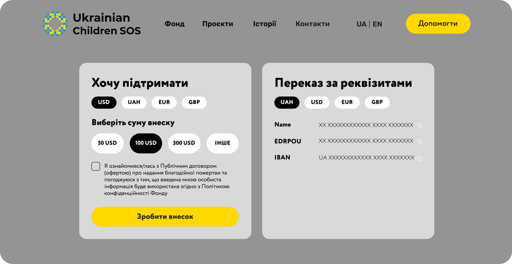
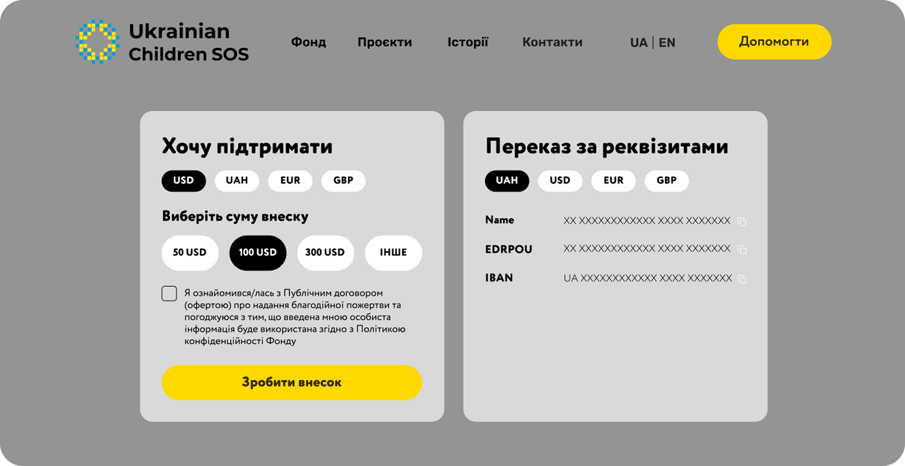

Ukrainian children SOS
About
project
Ukrainian Children SOS is a London-based charity supporting Ukrainian children affected by the war. The founder is a Ukrainian living in the UK, who reached out with a request to redesign their outdated and non-functional website.
Client: Ukrainian Children SOS Foundation
Year: 2025
Role: UX/UI Designer (solo project)
Location: London


Responsibilities
As a UX/UI designer, I was responsible for the entire process from discovery to final UI. This included user research, defining goals, building user personas and flows, designing the information architecture, creating wireframes, prototypes, and the complete responsive UI for both web and mobile.
Challenges
The previous website was confusing to use, some buttons didn’t work, the layout was messy, and overall it didn’t feel trustworthy. Because of that, people preferred donating in person or through social media instead of using the site. The main challenge was to rebuild trust and design a donation process that feels simple and safe. Finally, finding the right balance between a warm, child-friendly look and a professional charity style was key to making the design feel both human and reliable.
UX Research
& Insights
A small research was conducted with potential users and supporters to understand what motivates them to trust and donate online.
Key insights included that users:
- value transparency and want to see how funds are spent;
- feel more confident when secure payment options like PayPal and Apple Pay are available;
- appreciate seeing real people, the team, founders, and stories of children;
- clear reports, team photos.
User Persona
This persona represent emotionally supporter who want to donate quickly, safely and confidently.
→ Users need emotional connection, real stories must be visible immediately;
→ Users prefer quick, simple actions, donation flow must be straightforward (Apple Pay, PayPal);
→ Team, reports must be clear and visible.
Information
Architecture
→ Persistent “Donate” CTAs across pages for faster action;
→ Content reorganized to avoid long paragraphs and overwhelming layouts;
→ Children's Stories were moved into the main navigation and given a dedicated page so users can easily discover and explore them.
User Flow
I focused on a single user flow, the donation path, because this is the most important action for users and the organisation. This journey showed how a user discovers the foundation, reads a story, builds trust and proceeds to donate.
Wireframes
 

Final Design (UI)
The color palette was based on the client’s request to keep the brand soft, child-friendly, and connected to Ukraine. Pastel blue and yellow to create a calm, safe and warm environment. These colors help users associate the website with children, care, and trust without overwhelming or overly bright tones.
I chose a clean, rounded, highly readable font to support accessibility and create a friendly look. To reinforce the idea that this is a children’s humanitarian organisation, I used simple hand-drawn illustrations and friendly icon shapes. This visual language makes the website feel more personal.
The Donate button appears multiple times across the interface to support fast decision-making. This is intentional: the website’s primary goal is to encourage donations, so placing clear CTAs in the hero, header, and mid-sections increases visibility and improves conversions.